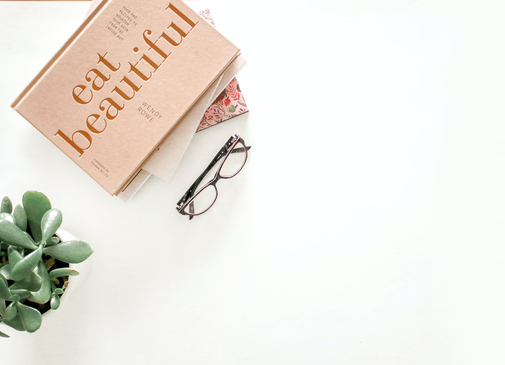
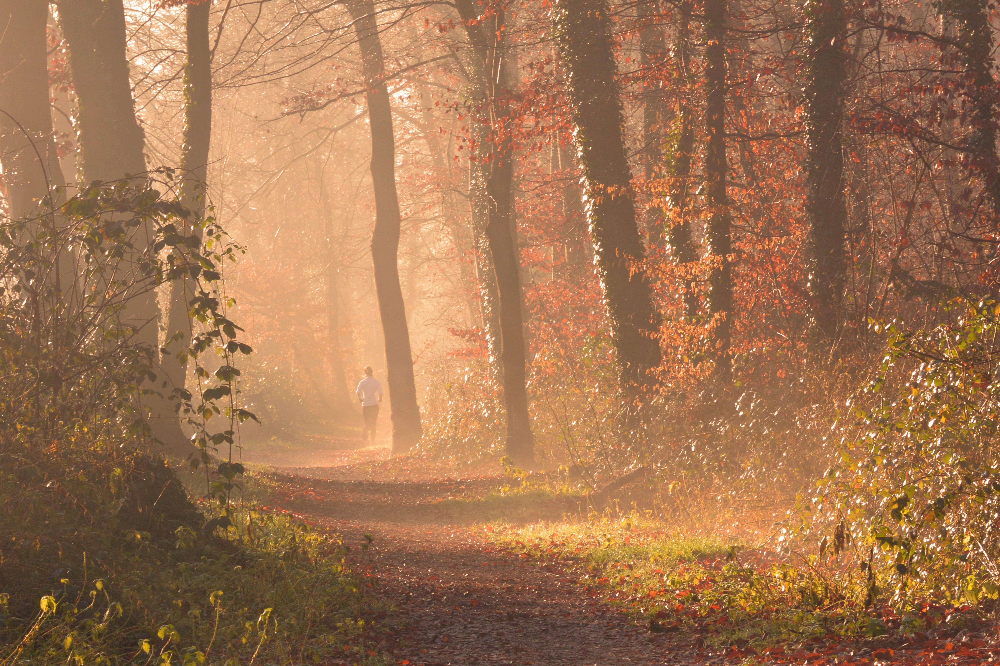
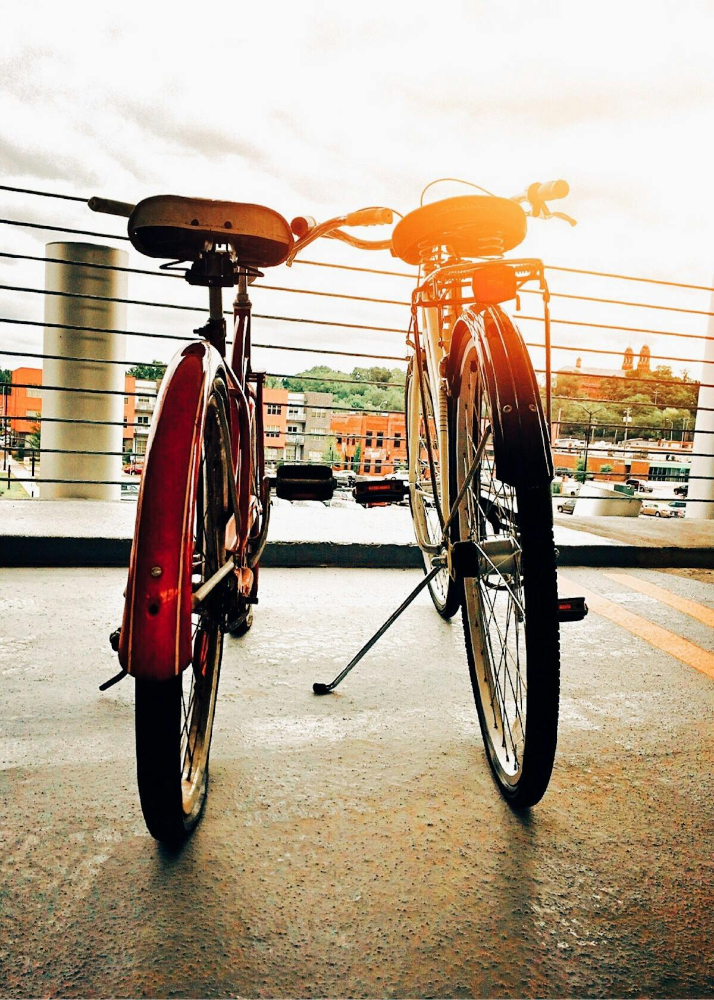
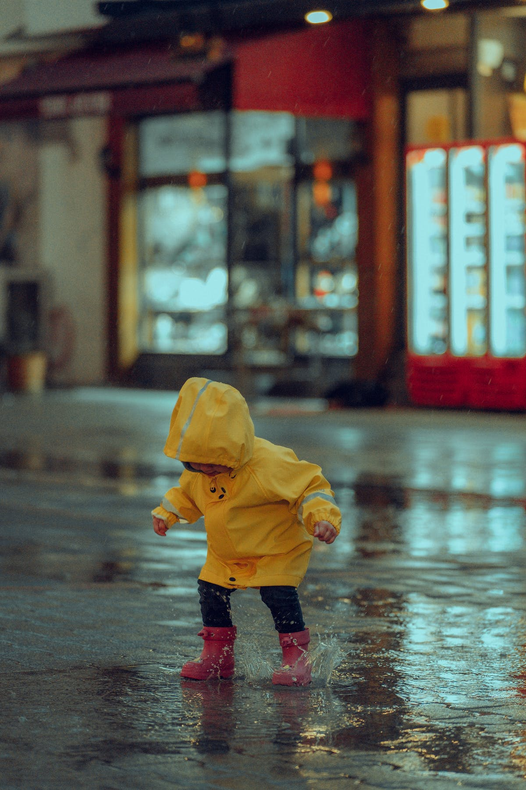
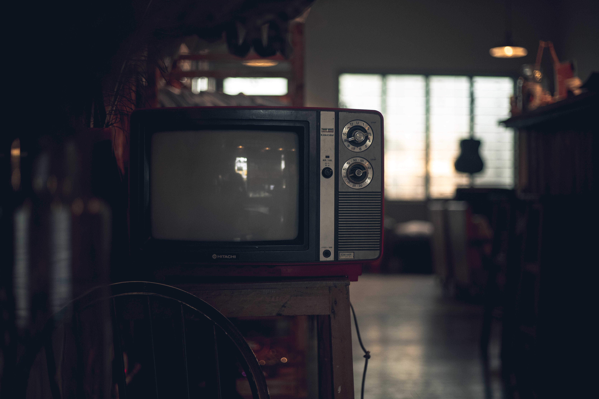

Music is a great way to relax and unwind. Whether it's your favorite playlist or discovering new tunes, music has the power to elevate your mood.
Reading expands the mind, offering new ideas, perspectives, and knowledge. It also improves memory, concentration, and critical thinking skills..
Staying active is important for a healthy lifestyle. Exercise can be fun! Whether it's jogging, cycling, or hitting the gym, find an activity that you enjoy.
 That is the most importance for my destiny. Don't focus only on working or studying.
Enjoy your favorite TV shows and movies with your family. It's a great way to unwind after a long day. Don't forget the popcorn or beer!
